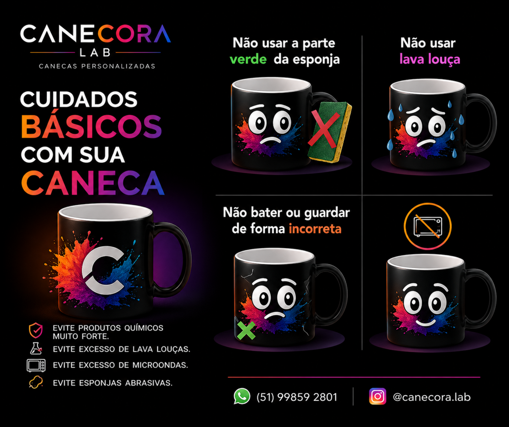

Presente com significado
Uma caneca com nome, foto ou frase vira lembrança diária. É simples, útil e muito mais marcante do que presentes genéricos.
A Canecora Lab cria canecas personalizadas com foto, nome, frase e identidade visual. Uma lembrança útil, bonita e emocional para aniversários, datas especiais, empresas e momentos que merecem ser lembrados todos os dias.
Uma caneca com nome, foto ou frase vira lembrança diária. É simples, útil e muito mais marcante do que presentes genéricos.
Cada pedido é pensado conforme a ideia do cliente: amor, família, profissão, personagens, datas especiais ou identidade de marca.
Você fala pelo WhatsApp, envia a ideia e recebe orientação para criar uma caneca bonita e pronta para presentear.
Temos opções brancas, semi coloridas, mágicas e espelhadas. O cliente escolhe o estilo e a arte é produzida conforme a proposta do presente.

Para manter a arte bonita por mais tempo, evite produtos químicos fortes, excesso de lava-louças, excesso de micro-ondas e esponjas abrasivas.
Ver cuidados completosCanecas personalizadas em Canoas/RS com foto, nome, frase e acabamento especial. Peça pelo WhatsApp.
Ver páginaCaneca com foto personalizada para eternizar momentos, lembranças e presentes emocionantes.
Ver páginaCanecas com nome, frase e identidade visual para presentes únicos e lembranças especiais.
Ver páginaCaneca mágica que revela a arte com calor: presente criativo, diferente e marcante.
Ver páginaCaneca espelhada personalizada com acabamento sofisticado para presentes premium.
Ver páginaIdeias de presente personalizado para namorado com canecas criativas, fotos e frases especiais.
Ver páginaCanecas personalizadas para mãe: presentes afetivos, úteis e cheios de significado.
Ver páginaLembrancinhas personalizadas em canecas para eventos, datas especiais e momentos marcantes.
Ver páginaCanecas para empresas, equipes, brindes corporativos e ações de marca.
Ver páginaAprenda os cuidados básicos para manter sua caneca personalizada bonita por mais tempo.
Ver páginaChame no WhatsApp, envie sua ideia, nome, frase ou imagem desejada. A produção é feita sob encomenda.
Sim. A Canecora Lab está em Canoas/RS e atende clientes da região metropolitana conforme combinação.
Sim. A maior parte dos pedidos é para presentes personalizados: mãe, namorado, amiga, professores, empresas e datas especiais.
A Canecora Lab também organiza ideias de canecas personalizadas por cidade, data, estilo e tipo de presente. Veja os principais caminhos:
Uma caneca personalizada vende melhor quando a página ajuda a pessoa a imaginar o presente pronto. Por isso, além de mostrar o tipo de produto, a Canecora Lab organiza ideias por intenção de busca: quem procura por presente para mãe pensa diferente de quem procura por caneca geek, caneca pet, caneca para empresa ou caneca com foto. Cada caminho precisa responder uma dúvida real e levar o visitante para o Instagram, onde os modelos visuais despertam vontade de chamar no WhatsApp.
O ponto principal é reduzir a distância entre curiosidade e ação. Uma pessoa que chega pelo Google pode ainda não conhecer a marca, mas já demonstrou interesse ao pesquisar. Quando encontra uma página clara, com exemplos, orientações, links relacionados e chamada para o Instagram, ela entende que existe uma solução prática. Essa navegação também fortalece o site porque cria conexões entre páginas de cidade, páginas de presente, páginas de estilo e páginas de compra.
Na prática, o visitante pode começar pesquisando por canecas personalizadas em Canoas, depois abrir ideias de caneca com foto, comparar uma caneca para casal, ver opções de frases engraçadas e finalmente acessar o Instagram para escolher o estilo visual. Esse fluxo é melhor do que uma página isolada, porque acompanha a forma como as pessoas pesquisam antes de comprar.
Esta página faz parte de uma arquitetura de SEO criada para conectar intenção de busca, conteúdo útil e conversão para o Instagram da Canecora Lab. O objetivo não é apenas ter muitas URLs publicadas, mas criar caminhos claros para diferentes tipos de clientes: quem busca por cidade, quem busca por presente, quem busca por data comemorativa, quem busca por estilo de caneca e quem ainda está pesquisando ideias antes de comprar.
O Google tende a compreender melhor um site quando as páginas possuem título claro, descrição coerente, heading principal alinhado ao tema, texto original, links internos rastreáveis, sitemap atualizado e navegação consistente. Por isso, cada página do projeto foi conectada a outros assuntos próximos. Uma pessoa interessada em caneca com foto pode também abrir caneca para casal, caneca para mãe, ideias de canecas personalizadas e canecas personalizadas em Canoas. Essa relação dá contexto ao visitante e ajuda os mecanismos de busca a entender que a Canecora Lab trabalha com um conjunto real de soluções de presentes personalizados.
Outro ponto importante é a conversão. O site não foi pensado para substituir o Instagram; ele funciona como porta de entrada pelo Google. A página atrai a pesquisa, entrega explicação e direciona para o perfil da Canecora Lab, onde o visitante pode visualizar modelos, sentir o estilo da marca e chamar no WhatsApp. Essa união entre Google, Instagram e atendimento direto cria um funil simples: descoberta, interesse visual, conversa e pedido.